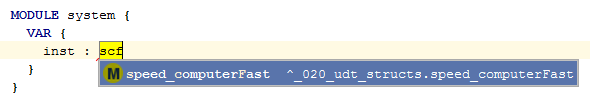

Both Camel Hump and underscore-based matches are supported, so you only need to type the capital characters of long names, or the first letters after the underscore ('_') and FASTEN will guess the rest for you.
